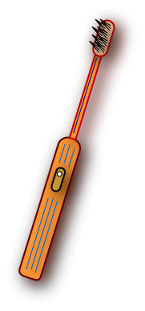

Ein Beispiel von Maschinensprache
Nehmen wir an, dass eine elektrische Zahnbürste über
Prozessor und Hauptspeicher verfügt.
Der Prozessor kann die Borsten links und rechts herum rotieren lassen
und er kann den Ein/Ausschalter überprüfen.
Die Maschinenbefehle sind ein Byte lang
und entsprechen den folgenden Maschinenoperationen:

| Maschinenbefehle | Maschinenoperation |
|---|
| 0000 0000 | Stop. |
| 0000 0001 | Rotiere die Borsten links herum. |
| 0000 0010 | Rotiere die Borsten rechts herum. |
| 0000 0100 | Gehe zurück und starte das Programm neu. |
| 0000 1000 | Wenn der Schalter aus ist, überspringe den nächsten Befehl. |
Hier ist der Hauptspeicher für das Zahnbürstensystem:
| Adresse | Maschinenbefehle |
|---|
| 0 | |
| 1 | |
| 2 | |
| 3 | |
| 4 | |
Die Zahnbürste ist elektrisch. Wenn der Schalter eingeschaltet wird, werden die Befehle einer nach dem anderen entsprechend ihrer Reihenfolge ausgeführt. Der Start erfolgt an der Adresse 0. Das Programm kann mit dem Befehl 0000 0100 an der Adresse 0 neu gestartet werden.
Die Zahnbürste soll die Bürsten links und rechts rotieren lassen, wenn der Schalter an ist, und stoppen, wenn der Schalter aus ist.
FRAGE 4:

Füllen Sie den Hauptspeicher (gedanklich oder auf einem Blatt Papier) mit den Maschinenbefehlen, um die Zahnbürste zu steuern. Beginnen Sie mit Adresse 0.
(Nehmen Sie sich dafür bitte die Zeit. Sie können dann allen erzählen,
dass Ihr erstes Programm, das Sie geschrieben haben, ein Steuerprogramm für eine elektrische Zahnbürste war. Sie möchten doch nicht diese Gelegenheit verpassen.)